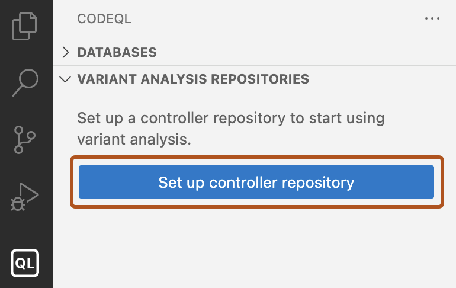
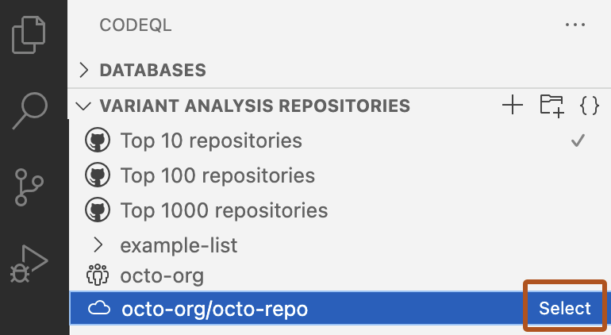
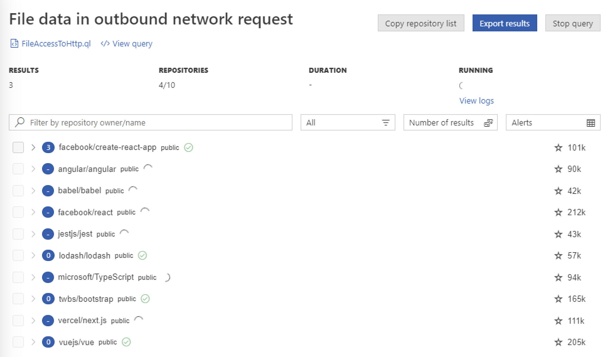
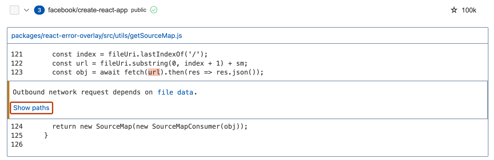
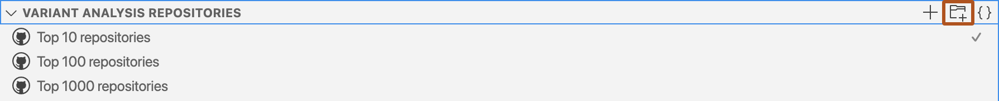

You can run CodeQL queries on a large number of repositories on GitHub from Visual Studio Code.
With multi-repository variant analysis (MRVA), you can run CodeQL queries on a list of up to 1,000 repositories on GitHub from Visual Studio Code.
You need to enable code scanning using CodeQL on GitHub, using either default setup or advanced setup, before adding your repository to a list for analysis. For information about enabling code scanning using CodeQL, see Configuring default setup for code scanning.
You must define a controller repository before you can run your first multi-repository variant analysis.
Controller repositories can be empty, but they must have at least one commit.
On GitHub.com, the controller repository visibility can be "public" if you plan to analyze only public repositories. The variant analysis will be free.
The controller repository visibility must be "private" if you need to analyze any private or internal repositories on GitHub.com.
Any actions minutes that you use to run variant analysis on private or internal repositories, above the free limit, is charged to the repository owner. For more information about free minutes and billing, see GitHub Actions billing.
In the "Variant Analysis Repositories" view, click Set up controller repository to display a field for the controller repository.

Type the owner and name of the repository on GitHub that you want to use as your controller repository and press the Enter key.
If you are prompted to authenticate with GitHub, follow the instructions and sign in to your account. When you have finished, a prompt from GitHub Authentication may ask for permission to open in Visual Studio Code, click Open.
The name of the controller repository is saved in your settings for the CodeQL extension. For information on how to edit the controller repository, see Customizing settings.
By default, the "Variant Analysis Repositories" view shows the default lists of the Top 10, Top 100, and Top 1000 public repositories on GitHub.com for the language that you are analyzing. If your controller repository is hosted on SUBDOMAIN.ghe.com, these lists are not available.
Optionally, you can add a new repository, organization, or list.
In the "Variant Analysis Repositories" view, click + to add a new database.
From the dropdown menu, select From a GitHub repository or All repositories of GitHub org or owner.
Type the identifier of the repository or organization that you want to use into the field.
Select which GitHub repository or repositories you want to run your query against.

Open the query you want to run, right-click in the query file, and select CodeQL: Run Variant Analysis to start variant analysis.
Note
To a cancel a variant analysis run, click Stop query in the "Variant Analysis Results" view.
In the "Variant Analysis Repositories" view, click + to add a new database.
From the dropdown menu, select From a GitHub repository or All repositories of GitHub org or owner.
Type the identifier of the repository or organization that you want to use into the field.
When you run MRVA, there are two key places where errors and warnings are displayed:
Visual Studio Code errors: any problems with creating a CodeQL pack and sending the analysis to GitHub are reported as Visual Studio Code errors in the bottom right corner of the application. Information is also available in the "Problems" view.
"Variant Analysis Results": any problems with the variant analysis run are reported in this view.
As soon as a workflow to run your variant analysis on GitHub is running, a "Variant Analysis Results" view opens to display the results as they are ready. You can use this view to monitor progress, see any errors, and access the workflow logs in your controller repository.

When your variant analysis run is scheduled, the "Results" view automatically opens. Initially, the view shows a list of every repository that was scheduled for analysis. As each repository is analyzed, the view is updated to show a summary of the number of results. To view the detailed results for a repository (including results paths), click the repository name.
For each repository, you can see:
Number of results found by the query
Visibility of the repository
Whether analysis is still running or has finished
Number of stars the repository has on GitHub
Click the repository name to show a summary of each result.
Explore the information available for each result using links to the source files on GitHub. For data flow queries, there'll be an additional "Show paths" link.

You can export your results for further analysis or to discuss them with collaborators. In the "Results" view, click Export results to export the results to a secret gist on GitHub or to a Markdown file in your workspace.
Note
CodeQL analysis always requires a CodeQL database to run queries against. When you run variant analysis against a list of repositories, your query will only be executed against the repositories that currently have a CodeQL database available to download. The best way to make a repository available for variant analysis is to enable code scanning with CodeQL. For information about enabling code scanning using CodeQL, see Configuring default setup for code scanning.
In the "Variant Analysis Repositories" view, click the "Add list" icon.

Type a name for the new list and press Enter.
Select your list in the view, then click + to add a repository to your list.
You can manage and edit your custom lists by right-clicking on either the list name, or a repository name within the list, and selecting an option from the context menu.
The custom lists are stored in your workspace in a databases.json file. If you want to edit this file directly in Visual Studio Code, you can open it by clicking { } in the view header.
For example, if you want to continue analyzing a set of repositories that had results for your query, click Copy repository list in the "Variant Analysis Results" view to add a list of only the repositories that have results to the clipboard as JSON.
In the following example snippet, my-organization/my-repository had results for a query:
{
"name": "new-repo-list",
"repositories": [
"my-organization/my-repository"
]
}
You can then insert the new-repo-list of repositories into databases.jsonfor easy access in the "Variant Analysis Repositories" view.
Note
This feature uses the legacy code search via the GitHub code search API. For more information on the syntax to use, see Searching code (legacy).
You can use code search directly in the CodeQL extension to add a subset of repositories from GitHub to a custom list.
For example, to add all repositories in the rails organization on GitHub, search org:rails.
You can add a maximum of 1,000 repositories to a custom list per search.
In the "Variant Analysis Repositories" view, choose the list that you want to add repositories to. You can create a new list or choose an existing list that already contains repositories.
Right-click on the list you have chosen and then click Add repositories with GitHub code search.
In the pop-up that appears at the top of the application, under the search bar, select a language for your search from the choices in the dropdown.
In the search bar, type the search query that you want to use and press Enter.
You can view the progress of your search in the bottom right corner of the application in a box with the text Searching for repositories.... If you click Cancel, no repositories will be added to your list. Once complete, you will see the resulting repositories appear in the dropdown under your custom list in the Variant Analysis Repositories view.
Some of the resulting repositories will not have CodeQL databases and some may not allow access by the CodeQL extension for Visual Studio Code. When you run an analysis on the list, the "Variant Analysis Results" view will show you which repositories were analyzed, which denied access, and which had no CodeQL database.
To run CodeQL queries with multi-repository variant analysis on self-hosted runners, you first need to ensure that you have added a self-hosted runner to your controller repository, or ensure that the controller repository has access to an organization- or enterprise-level runner.
You then need to add a new Actions repository variable in your controller repository with the name MRVA_RUNNER_OS containing a JSON-formatted list of the labels of the self-hosted runner you wish to use. For example:
["self-hosted", "macOS", "ARM64"]
Note
You must set the MRVA_RUNNER_OS variable under the Actions repository variables in your controller repository's settings, and not an environment variable or Actions secret under your Actions settings or in your workflow's .yml file.
See Store information in variables.
For more information, see Adding self-hosted runners and Managing access to self-hosted runners using groups.
When you run a query with multi-repository variant analysis on a self-hosted runner, the analysis is run entirely on the self-hosted runner. You don't need to create any new workflows, but you must specify which repository the CodeQL for Visual Studio Code extension should use as a controller repository. As the analysis of each repository completes, the results are sent to VS Code for you to view.